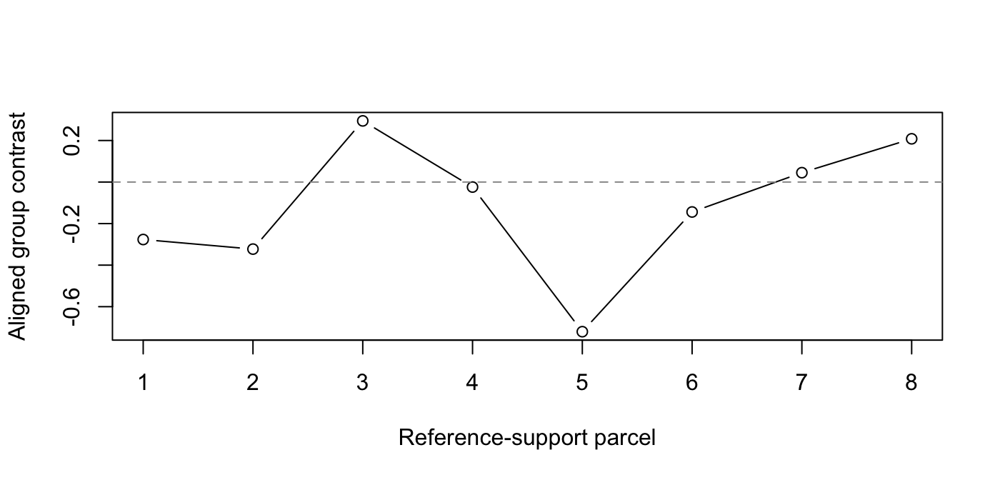

Functional alignment across subjects
Source:vignettes/dkge-functional-alignment.Rmd
dkge-functional-alignment.RmdSuppose each participant has a beta map on a different subject-specific parcellation. Averaging after resampling parcels to MNI coordinates assumes that anatomical proximity supplies correspondence. Functional alignment asks a stronger question: which parcels have comparable response signatures, and how should each participant’s contrast field be moved onto one identified display support? The result is a matrix with one aligned row per participant, followed by group inference and rendering on that same support.
This workflow keeps five objects separate: source features, reference support, functional template, fitted correspondence, and aligned maps. That separation is what prevents a bare coordinate grid or a plotting helper from quietly becoming a functional model.
What are the inputs?
For subject (s), the primary beta map is (q P_s): rows share effect
names, while columns are that subject’s parcels. K is the
(q q) effect-space covariance or kernel. Functional alignment needs at
least one separate beta-map channel with the same effects and parcel
ordering; a second independent channel lets reference selection be
evaluated out of sample.
Fit the shared effect-space model and estimate the contrast without using each held-out subject to define its own basis:
fit <- dkge_fit(
dkge_data(subjects), K = K, rank = 2,
w_method = "mfa_sigma1", effect_scaling = "none"
)
contrast <- dkge_contrast(
fit, c(1, -1, rep(0, q - 2)),
method = "loso", align = FALSE
)The fit-level MFA weights affect the pooled moment. They are not imported as second-level inverse-variance weights:
How is functional correspondence identified?
Build over-ranked kernel-image features from two independent
channels. These features retain rank(K) coordinates rather
than the smaller estimation rank.
features <- dkge_alignment_features(
fit, contrast, independent_betas = alignment_betas,
independent_data_hash = "alignment-acquisition-A"
)
validation <- dkge_alignment_features(
fit, contrast, independent_betas = validation_betas,
independent_data_hash = "alignment-acquisition-B"
)Use one channel to fit each candidate correspondence and the other to score symmetric reconstruction. Only a subject selected by this criterion is a medoid; a caller-fixed subject is simply a reference subject.
mapper <- dkge_mapper_spec(
"sinkhorn", epsilon = 0.1, lambda_emb = 0.8,
lambda_spa = 0.2, warm_start = FALSE
)
selection <- dkge_select_reference_subject(
centroids, features, validation, sizes = sizes,
mapper = mapper, method = "functional_heldout"
)
selection
#> <dkge_reference_selection>
#> subject : subject4 (index 4 )
#> method : functional_heldout
#> criterion : symmetric_normalized_reconstruction_loss
#> eligibility: eligibleWhy learn a group template on the selected support?
The selected subject supplies real coordinates and labels, but its functional features are still one noisy measurement. Initialize those features on the same support, then iteratively refit every subject and take mass-aware template updates. Unit row normalization keeps the functional term from disappearing through repeated barycentric contraction.
ref <- selection$reference_subject
support <- dkge_reference_support(
centroids[[ref]], labels = parcels,
provenance = list(
kind = "selected_subject_support",
subject_id = selection$reference_subject_id,
reference_selection_hash = selection$structural_hash
)
)
initializer <- dkge_functional_template(
support, features$features[[ref]], feature_source = "independent",
provenance = list(independent_data_hash = "alignment-acquisition-A"),
reference_selection = selection
)
template <- dkge_fit_functional_template(
support, features, centroids, reference_selection = selection,
sizes = sizes, mapper = mapper,
initialization = "supplied_independent",
initial_template = initializer,
max_iter = 25, tolerance = 0.01, objective_tolerance = 0.01
)
template
#> <dkge_functional_template>
#> support : support-de7eedb27d35
#> features: 5
#> source : independent
#> provenance receipt: TRUE
#> fit : converged
#> iterations: 17
#> eligibility: approximateThe trajectory is an audit record, not a decorative optimizer trace:
data.frame(
iterations = template$fitting$iterations,
final_objective = template$fitting$final_objective,
effective_rank = template$fitting$final_feature_stats$effective_rank,
eligibility = template$eligibility$status
)
#> iterations final_objective effective_rank eligibility
#> 1 17 0.1075459 3.23393 approximateHow do you obtain aligned rows and inference?
Apply the final operators to the cross-fitted subject contrasts. Equal subject weighting is explicit in the resulting object.
aligned <- dkge_align_to_template(template, support, contrast)
aligned
#> <dkge_aligned_maps>
#> support : support-de7eedb27d35
#> subjects : 6
#> contrasts : 1
#> weighting : equal_subject
#> eligibility: approximateIndependent correspondence is the recommended default, but it does not erase the current contrast estimator’s dependence on an estimated, rank-truncated same-data latent span. The frozen calibration court therefore labels this combination approximate. The explicit override below records that choice; it does not turn the test into an exact one.
The optional same-data residualized feature mode has an additional assumption: its covariance cancellation is exact only under the declared separable effect-by-parcel covariance model, conditional on fixed generating directions. Its preprocessing receipt verifies the algebraic transforms, not that separability holds in an observed cohort.
set.seed(2712)
inference <- dkge_infer_aligned(
aligned, inference = "signflip", correction = "maxT", n_perm = 199,
allow_approximate_alignment = TRUE
)
head(inference$p_adjusted[[1]])
#> parcel1 parcel2 parcel3 parcel4 parcel5 parcel6
#> 1.00 1.00 1.00 1.00 0.09 1.00What does rendering do?
Rendering consumes the identified support and already aligned values.
It never learns correspondence. A support can instead carry a voxel
decoder, or its labels can be passed to
dkge_paint_reference_map() for a volume.
renderer <- dkge_renderer(support)
rendered <- dkge_render_aligned(renderer, aligned)
head(rendered$support_values[[1]])
#> parcel1 parcel2 parcel3 parcel4 parcel5 parcel6
#> -0.27666530 -0.32276313 0.29441452 -0.02410944 -0.72037677 -0.14403258
The horizontal order comes from the selected support. The ordinate is a group summary of aligned subject rows, not a value learned from the renderer.
A compact glossary
| Object | What it owns | What it does not imply |
|---|---|---|
| Shared effect space | Named design effects and the metric K
|
Spatial correspondence |
| Reference support | Coordinates, labels, topology, optional decoder | Functional data or a mapping |
| Correspondence | Fitted subject-to-support operators | A group statistic |
| Functional template | Target response signatures and masses | Privileged truth from one subject |
| Aligned subject rows | One contrast row per subject on one support | Independent parcel-level samples |
| Group inference | Subject-level uncertainty and multiplicity control | New correspondence fitting |
| Rendering | Display or decoding of an existing support statistic | Functional alignment |
A fixed MNI lattice can be useful display support, but coordinates alone have no functional mapping to any participant. It becomes a functional target only after template features have been learned on it from an eligible channel.
For the effect-space model, see
vignette("dkge-concepts"); for dense spatial decoding, see
vignette("dkge-dense-rendering"); and for the frozen
calibration limits behind the approximate label, consult
?dkge_infer_aligned.